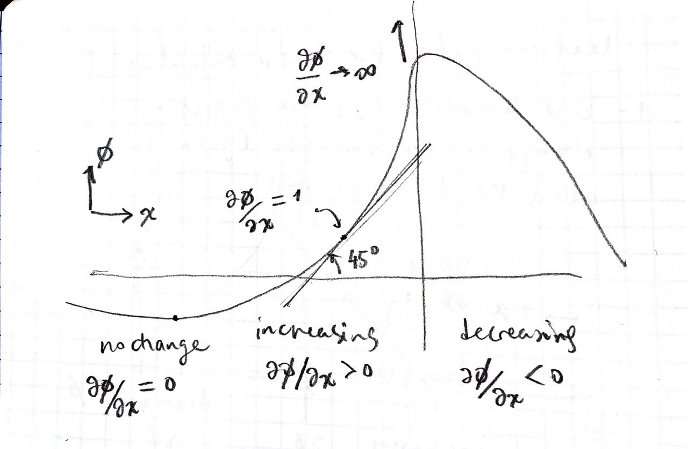
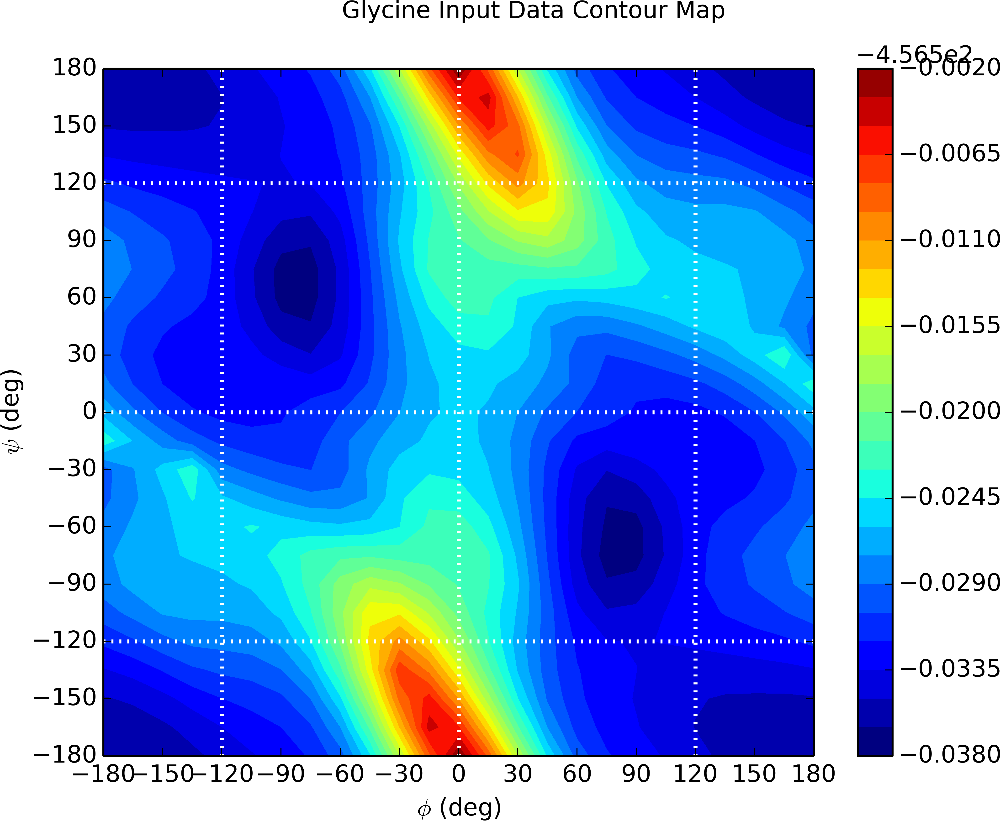

a = [0,1.5,3]';
b = [-2 2 1]';
c = dot(a,b);
d = cross(a,b);
Introduce \(\nabla \phi\)
New page
Introduce \(\nabla \boldsymbol{v}\)
Ask AI:
Students should be able to:
[ ] perform simple algebraic operations with vectors